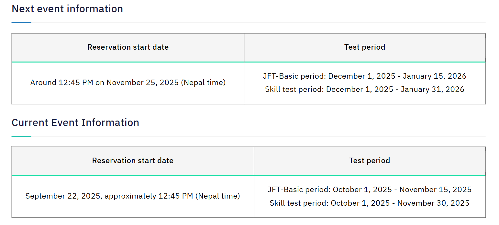

Preparation for the JFT-Basic
Here are some useful tips and resources to help you prepare effectively for the JFT-Basic test:
- Understand the Format: Familiarize yourself with the CBT structure and question types (Reading, Listening, Vocabulary, Grammar).
- Use JF Learning Tools: Study using "Irodori", "Marugoto", and other JF Japanese e-learning platforms.
- Practice Regularly: Solve practice questions and past papers available on official resources.
- Focus on Daily-Life Japanese: Since the test focuses on daily communication, practice using Japanese in realistic scenarios.
The Japan Foundation developed the JF Can-do for Life in Japan in 2019 for foreign nationals on Specified Skilled Worker status or other status of residence who are not native speakers of Japanese. It outlines the basic Japanese skills required for everyday life in Japan. Each of its statements begins with “I can...” and describes an ability to complete a communicative task. It was developed based upon the philosophy and concept of the JF Standard for Japanese-Language Education released in 2010. It consists of 381 Can-dos at levels A1 and A2.
This test is composed of four sections: Letter and Vocabulary, Conversation and Expression, Listening Comprehension, and Reading Comprehension. There are approximately 50 questions, and the test time is 60 minutes. There is no time limit for completing each section. You can review and answer again at any time as long as you are within the same section. However, once you move to the next section, you cannot go back to the previous section. In the Listening Comprehension section, you cannot go to the previous or next question to review and answer again.

Hint for Learning and Support
- Hint for Learning
- The Japan Foundation Support System

Examination outside Japan
Please check the exam-specific page for details such as the country where each exam is held, payment methods, and exam fees.

Test Schedule and Reservation
When using
- If viewing on a PC, please adjust the display size of your browser so that the table fits on your screen, and use the scroll bars to the right and bottom of the table to scroll the displayed content.
- When viewing on a smartphone, swipe the table to change the displayed content. Turn your smartphone horizontally for easier viewing.
Event Information

Test Resources & Help

Test Registration Process

Sample Questions

Hint for Learning and Support